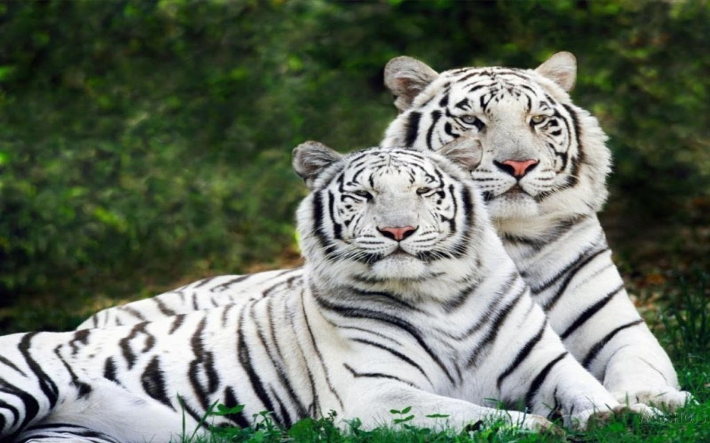

En la clasificación científica de los seres vivos, los animales (Animalia) o metazoos (Metazoa) constituyen un reino que reúne un amplio grupo de organismos que son eucariotas, heterótrofos, pluricelulares y tisulares (excepto los poríferos). Se caracterizan por su amplia capacidad de movimiento, por no tener cloroplasto (aunque hay excepciones, como en el caso de Elysia chlorotica) ni pared celular, y por su desarrollo embrionario; que atraviesa una fase de blástula y determina un plan corporal fijo (aunque muchas especies pueden sufrir una metamorfosis posterior como los artrópodos). Los animales forman un grupo natural estrechamente emparentado con los hongos (reino Fungi). Animalia es uno de los cinco reinos del dominio Eukaryota, y a él pertenece el ser humano. La parte de la biología que estudia los animales es la zoología.
Los filos animales más conocidos aparecen en el registro fósil durante la denominada explosión cámbrica, sucedida en los mares hace unos 542 a 530 millones de años. Los animales se dividen en varios subgrupos, algunos de los cuales son vertebrados: (aves, mamíferos, anfibios, reptiles, peces) e invertebrados: artrópodos (insectos, arácnidos, miriápodos, crustáceos), anélidos (lombrices, sanguijuelas), moluscos (bivalvos, gasterópodos, cefalópodos), poríferos (esponjas), cnidarios (medusas, pólipos, corales), equinodermos (estrellas de mar), nematodos (gusanos cilíndricos), platelmintos (gusanos planos), etc.
